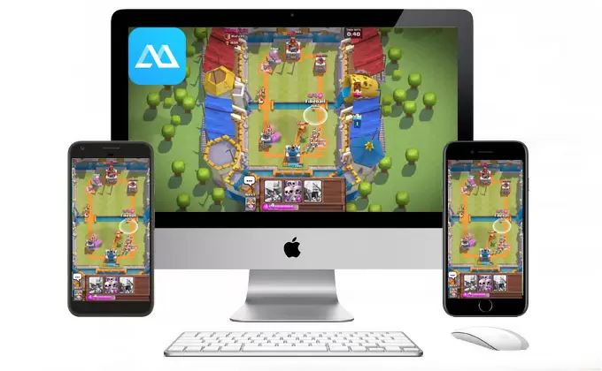
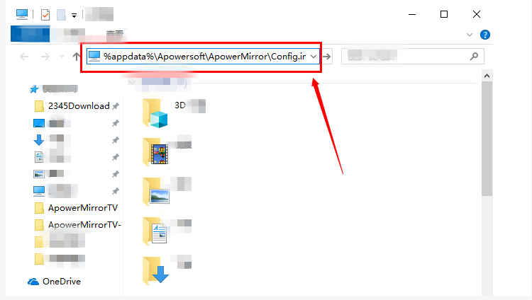

投屏 + 操控安卓手机到电脑，ApowerMirror 这几天我用下来的真实感受
不想装模拟器、又想在电脑上用键盘玩手游，或者把手机画面投到显示器上录视频——ApowerMirror 是我这几天试下来体验最完整的一套方案，从安装到实际使用聊一聊。
说实话，我之前对"投屏到电脑"这件事一直没太大需求，直到上周想录一段手游操作过程，手机屏幕太小、手指挡住画面、画质一塌糊涂——才发现自己需要一个能把安卓屏幕完整投到桌面、最好还能用键盘控制的工具。简单搜了一圈，ApowerMirror的官网是出现频率最高的名字，就下来试试。
初印象：安装到连上只用了五分钟
安装过程没有任何花哨的东西，从官方下载拿的安装包双击一路下一步，默认路径就行。装好之后程序自动弹出来，界面是那种很标准的"左侧连接方式 + 右侧设备列表"布局，按钮大、分区清楚，第一眼没什么学习成本。
真正让我没想到的是连接的速度。我选的是无线投屏，电脑和手机在同一个 WiFi 下，手机端也装个 App，点一下"自动检测"，不到十秒就识别到了。USB 连接更快，插上线手机弹窗点"允许 USB 调试"就完事了。两种方式我都试了，无线胜在方便，USB 胜在稳定——画面几乎没有延迟。

实际用下来：三个高频功能讲点真感受
用键盘玩手游，这感觉挺不一样的
我装它主要就是奔着游戏键盘去的——之前一直用模拟器玩手游，但模拟器要重新下载游戏、有的还会被检测封号。ApowerMirror 的思路完全不一样：游戏还是跑在你自己的手机上，电脑只是"替你伸手"，把键盘按键翻译成屏幕上的触摸动作。
具体操作其实很简单：镜像成功后打开游戏键盘功能，里面会有几个虚拟按键图标，把它们拖拽到游戏画面里对应的位置——比如方向键拖到虚拟摇杆上，技能键拖到技能按钮上。然后给每个位置绑定你习惯的键盘按键，保存就行。下一次打开同一款游戏，键位自动就加载好了，不用重新拖。
说点真实的：刚开始拖的时候觉得圆形的生效范围不太好调，调小了容易点不中，调大了会覆盖到旁边的按钮。而且射击类游戏里瞄准按钮如果和摇杆位置重叠的话会冲突，我把瞄准区域挪到画面右侧空白处才解决。但调顺之后，用 WASD 走位、空格开火的感觉真的接近端游，至少录出来的视频画面干净多了——不再有手指挡镜头的问题。
画面旋转和缩放：小功能大救星
有天我投一个竖屏的短视频 App 到电脑上，画面竖着占了屏幕中间一小块，看着特别别扭。后来才发现鼠标移到镜像画面右上角点一下就能手动旋转方向，直接横过来铺满窗口。玩横屏游戏的时候窗口太小看不清细节，又在桌面程序窗口右下角拖拽拉大——这两个小功能我一开始没注意到，还是无意中发现的，解决了好几个头疼的小场景。
多机同屏这个功能我虽然没四台手机同时投，但试了两台并排显示，各自独立旋转和缩放，感觉以后直播或者做对比演示的时候能用得上。
AirCast 云投屏：跨网络能用，但得算账
有个朋友想让我帮他远程演示一个手机 App，但他的 WiFi 和我不在同一个网络——这时候 LocalCast 就帮不上忙了，得用 AirCast。不过 AirCast 是按时长收费的，不是一次性授权，而且参与投屏的每台设备都要登录账号。
说实话，这个计费方式让我纠结了一下。如果只是偶尔跨网络用一次，买个短时长还行；但如果经常要远程演示或者帮别人调试手机，按时长烧其实不如 LocalCast 一次授权来得实在。毕竟同一局域网下 LocalCast 是永久有效的，AirCast 解决的是"跨网络"这个单一场景，场景没命中就白花了。
两个容易踩的小坑
一个是安装路径。我第一次装的时候随手选了一个带中文全角括号的路径，结果报错了——后来还是去ApowerMirror文档查了一下，换成默认的 Program Files 下纯英文路径就好。桌面程序还依赖 .NET Framework，要是报 .NET 4.0 相关的错误，去微软官网把 4.0、4.7.2、4.8 三个版本都装上最稳。
另一个是启动崩溃。装好之后有一次程序一开就闪退，官方给的办法是去 %appdata%\Apowersoft\ApowerMirror\Config.ini 里，在 [Main] 段下面加一行 ShowNewerToutrial=False——改完重启就正常了，至今没再崩过。

适合谁，不适合谁
适合的场景其实挺明确的：想在电脑上用键鼠玩安卓手游、又不想装模拟器的人；需要把手机画面投到桌面录视频、做演示的创作者；偶尔要跨网络帮朋友远程看手机的人。ApowerMirror 在这些场景下的完成度挺高，每个功能都不是花架子。
不太适合的场景也有。如果你只是想偶尔把手机投到电视上看看视频，那可能 AirPlay 或者 Chromecast 就够用了，不需要专门装一套电脑端软件。还有就是重度云投屏用户——AirCast 按时长计费长期用下来成本不低，得自己算清楚账。
最后
这几天用下来，ApowerMirror 给我的感觉是"够用而且顺手"，没有让我抓狂的硬伤，也没有那种"这功能做出来给谁用"的鸡肋。投屏、控制、游戏键盘这三个核心需求都解决得干净利落，至于付费不付费、用 LocalCast 还是 AirCast，其实就是具体场景下的选择问题。
这套工具的资料在三个仓库都能拿到，维护得比较勤快，国内访问也不愁——国外的朋友可以直接上GitHub，国内访问慢的话切到Gitee或者GitCode。